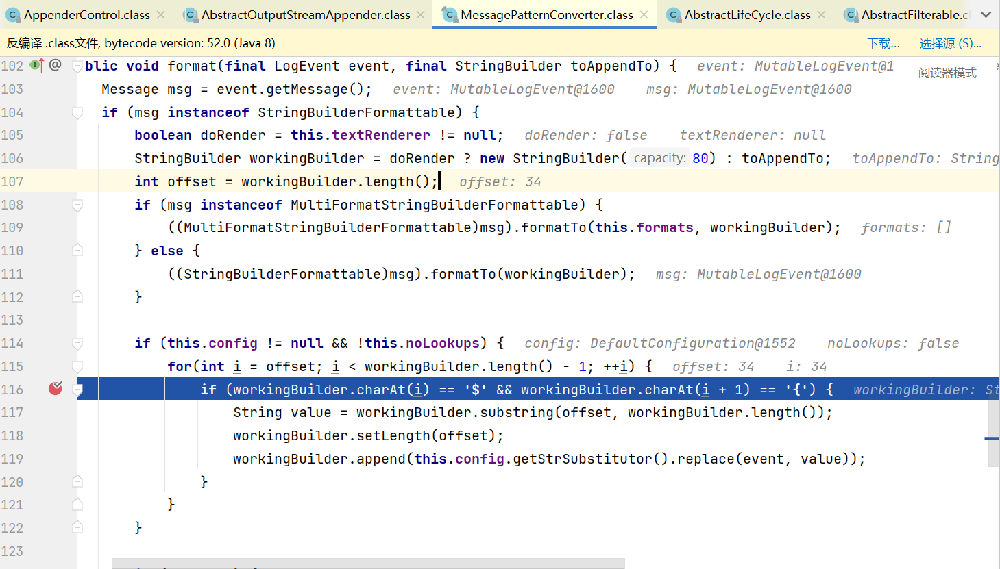

Apache Log4j2 RCE
Apache Log4j2 RCE
漏洞背景
Apache Log4j是一个基于Java的日志框架，已于2015年8月5日停止维护。Log4j2是其重构升级版本，新增的 Lookups 方法设计用于通过多种途径动态引入外部变量。 log4j2版本 < log4j-2.15.0-rc2 可由JNDI注入实现远程代码执行。
环境搭建
下载网上的poc环境
1 | https://hub.fastgit.org/tangxiaofeng7/apache-log4j-poc |
pom导入依赖失败
手动下载并导入
改下java编译器
环境搭建完成
漏洞复现
这里拿 jdk-8u41复现
ldap:
rce:
1 | java -jar JNDI-Injection-Exploit-1.0-SNAPSHOT-all.jar -A 127.0.0.1 -C "calc" |
漏洞分析
问题出在MessagePatternConverter.class和Interpolator.class上
我们分别再该类对应处打上断点
MessagePatternConverter.class:

Interpolator.class:
开始调试
首先根据传入的String参数进入logger类的error方法
之后payload传入event参数
跟踪event参数
最后进入MessagePatternConverter.class#format方法

可以看到
会对workingBuilder变量从偏移量为34做一个${的判断
然后将payload截取放到value中
最后进入到Interpolator.class#lookup中
在这里var传入的是我们${}中的值
截取var中的前缀jndi放到prefix变量中
并由此获取到JndiLookup类放到lookup中
截取var中jndi:之后的字符串放入name变量
最后将name传入lookup.lookup(event, name),调用JndiLookup#lookup通过LDAP引入外部JNDI Reference
最后的最后
该漏洞对java的环境有要求
1 | jdk =< 8u181 |
此外
当JDK版本>=8u191，当存在 org.apache.naming.factory.BeanFactory 与 com.springsource.org.apache.el 等依赖时，可在返回的JNDI Reference中指定相应工厂类及setter方法，或是由LDAP引入序列化链实现RCE
同时